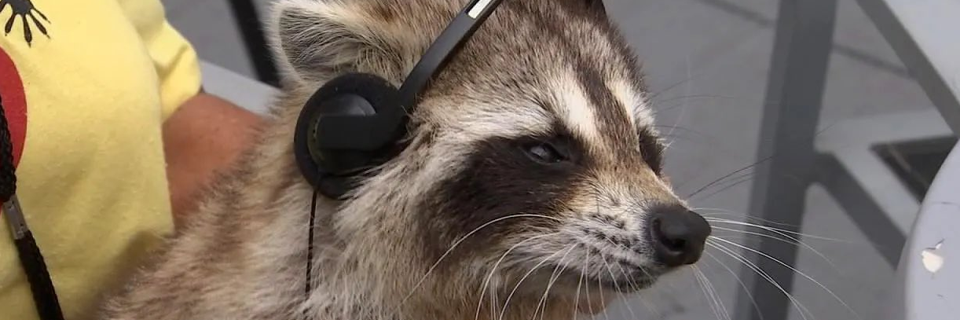

Intro

I have over 15 years using various Linux-based operating systems (I am currently using Arch Linux as my daily driver) and I have spent 5 of those as a power user, working with BASH scripting and remote server work. Currently, I am running an Open Source microblogging service called Mastodon. It is running on a remote server running Ubuntu, and I do upkeep on the server, as well as updating to the code (Ruby-on-rails, SCSS, HTML, Javascript) when there is a feature that I need to implement that isn't implemented in the main repo for the service.
I also work regularly with Git, both with Mastodon and my own personal projects, and am familiar with both Git and SSH. I am looking to move more into a programming role, simply because the Mastodon server doesn't pay the bills, and I would like to use the skills that I've learned throughout my life instead of just using them for hobbies or personal projects.
My job history is very customer-focused, and I enjoy helping people with problem solving and troubleshooting, and I spend a lot of my free time helping on the freeCodeCamp forums or looking for open source software to contribute to.
If you think I would be a good fit for your company or your project, please reach out! You can fill out the contact form, and I will be more than happy to get back to you within 2 business days!
Work
I am currently a Software Engineer with #100Devs, and am learning the ins and outs of Full-Stack Development. I spend a lot of time researching, as well as tinkering with various smaller projects while looking for bigger projects to start, and also contributing to Open Source Software.
Recently I have been doing a lot of Front-End work, specifically with HTML, CSS, and JavaScript. If you would like to see some of my projects, you can check out my GitHub here. You can also check out live versions of my projects live on the site, just check out the Projects section here!
About
Hihi! I'm Beloise and I love coffee, raccoons, and GNU/Linux operating systems! I've been playing with and learning about computers since I was 12 (anyone remember AOL disks?) and I'm a big fan of emo music. Blame the early 00's for that I suppose. I like to play games to decompress after a hard day's work, and in general like to meet new people and talk. I am also learning Japanese, it's been a thing I've been trying to do for a while, and I'm finally taking it seriously! If you wanna chat about Open Source Software, or just like raccoons, you can also find me on Twitter! It's a great place to get to know me and I use it to find lots of new people.Check it out here!
Contact
Projects
Welcome to my Projects! This will be updated pretty frequently, so make sure to check back! I like to show off the things I make, even if they're silly!